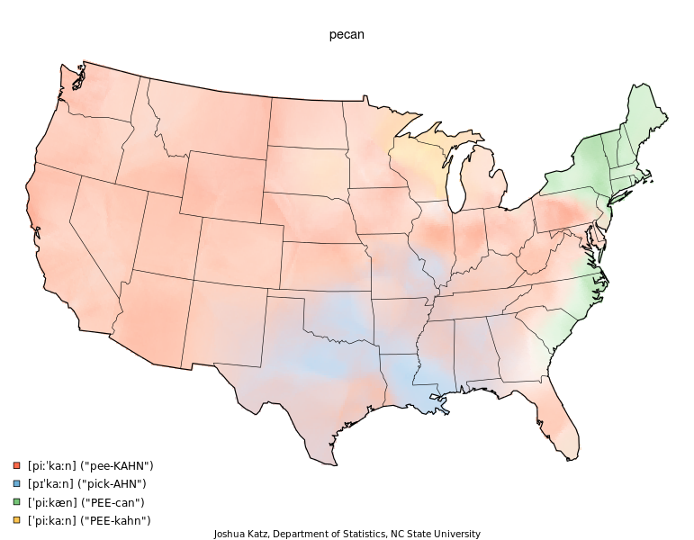

Dialect Survey Results

A fascinating view of the pronunciations of words around the United States, done by Joshua Katz at North Carolina State University. Given my background, I wasn't surprised to see my own speech has origins in a rather mixed geography. I say "ben" (not "bin"), "pick-AHN", think that car-ml & carra-mel have two different meanings, say "mischievous" as three syllables, feel there is a difference between roundabout and traffic circle, have played mumbledy-peg (and called it that), call it a "roly poly", and definitely know the difference between a freeway and a highway.